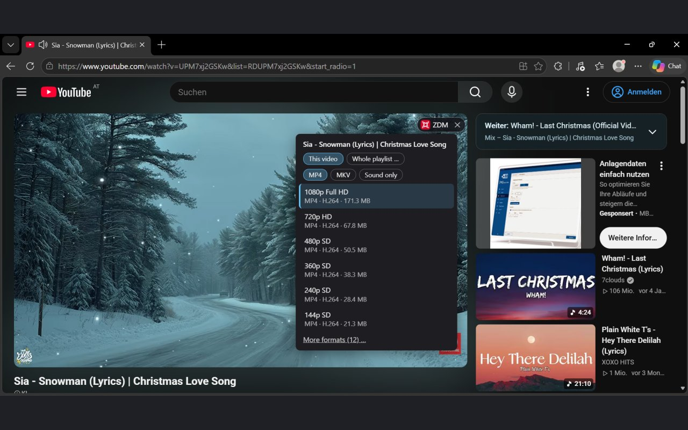

Fast, reliable downloads for Windows. Schnelle, zuverlässige Downloads für Windows. تنزيلات سريعة وموثوقة لنظام ويندوز.
Zap Download Manager splits every file into parts, carries on after a lost connection, and grabs the videos and audio you watch. Free, and it keeps no track of you. Zap Download Manager teilt jede Datei in Teile, macht nach einem Verbindungsabbruch weiter und lädt die Videos und Audios, die Sie ansehen. Kostenlos, und er verfolgt Sie nicht. يقسّم Zap Download Manager كل ملف إلى أجزاء، ويكمل بعد انقطاع الاتصال، وينزّل مقاطع الفيديو والصوت التي تشاهدها. مجاني ولا يتتبّعك.
Download for WindowsFür Windows herunterladenتنزيل لنظام ويندوزWindows 10 (1809 or later) and Windows 11, 64-bit. English, German and Arabic. Windows 10 (ab Version 1809) und Windows 11, 64-Bit. Englisch, Deutsch und Arabisch. ويندوز 10 (الإصدار 1809 فأحدث) وويندوز 11، 64 بت. الإنجليزية والألمانية والعربية.

What it doesWas er kannما الذي يفعله
Faster downloadsSchnellere Downloadsتنزيلات أسرع
Every file is fetched in several parts at once, so a slow line is used to the full.Jede Datei wird in mehreren Teilen gleichzeitig geladen, damit auch eine langsame Leitung voll genutzt wird.يُنزَّل كل ملف على عدة أجزاء في وقت واحد، فيُستفاد من الخط البطيء إلى أقصى حد.
Video and audio buttonVideo- und Audio-Schaltflächeزر الفيديو والصوت
A small button on the player lists the qualities. Pick one, or sound only (MP3 or the original).Eine kleine Schaltfläche am Player zeigt die Qualitäten. Wählen Sie eine, oder nur den Ton (MP3 oder das Original).يعرض زر صغير على المشغّل الجودات المتاحة. اختر واحدة، أو الصوت فقط (MP3 أو الأصلي).
Pause, resume, schedulePausieren, fortsetzen, planenإيقاف مؤقت واستئناف وجدولة
Stop any time and carry on later, even after a power cut. Queues and a scheduler start downloads when you want.Jederzeit anhalten und später weitermachen, sogar nach einem Stromausfall. Warteschlangen und ein Zeitplan starten Downloads, wann Sie wollen.أوقف في أي وقت وأكمل لاحقًا، حتى بعد انقطاع الكهرباء. تبدأ قوائم الانتظار والجدولة التنزيلات متى شئت.
Works with your browserArbeitet mit Ihrem Browserيعمل مع متصفحك
Chrome, Edge and Firefox hand their downloads to ZDM. Sites with DRM protection are refused at once.Chrome, Edge und Firefox übergeben ihre Downloads an ZDM. Seiten mit DRM-Schutz werden sofort abgelehnt.تسلّم Chrome وEdge وFirefox تنزيلاتها إلى ZDM. تُرفض المواقع المحمية بتقنية DRM فورًا.
No trackingKein Trackingبلا تتبّع
No accounts, no ads, no analytics. The browser extension talks only to the app on your own computer.Keine Konten, keine Werbung, keine Analyse. Die Browser-Erweiterung spricht nur mit der App auf Ihrem eigenen Computer.بلا حسابات ولا إعلانات ولا تحليلات. تتحدث إضافة المتصفح فقط مع التطبيق على حاسوبك أنت.


Browser extensionBrowser-Erweiterungإضافة المتصفح
The installer can offer the extension to Edge and Chrome, and opens the Firefox page at the end of setup. The store pages are in review. Das Installationsprogramm kann die Erweiterung Edge und Chrome anbieten und öffnet am Ende die Firefox-Seite. Die Store-Seiten sind in Prüfung. يمكن لبرنامج التثبيت عرض الإضافة على Edge وChrome، ويفتح صفحة Firefox في نهاية التثبيت. صفحات المتاجر قيد المراجعة.